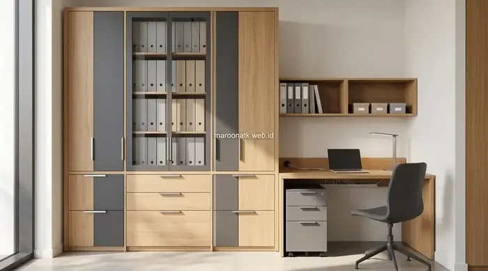
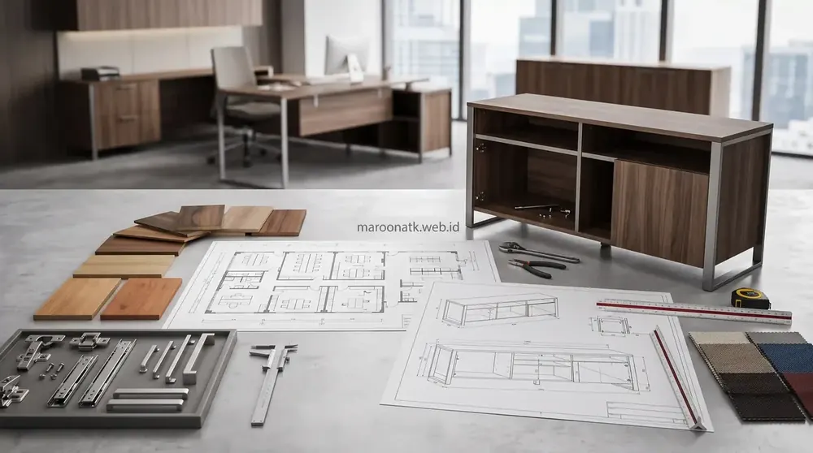

Penerapan Sistem Custom Furniture Kantor untuk Area Resepsionis dan Ruang Arsip
Custom furniture kantor untuk meja resepsionis dan kabinet arsip adalah solusi manufaktur perabot interior presisi yang dirancang mengikuti dimensi denah ruangan aktual. Menggunakan material Melamine Faced Chipboard (MFC) Grade E1 dan finishing HPL anti-gores, sistem ini mengoptimalkan penyimpanan vertikal hingga plafon, menyembunyikan jalur kabel listrik, serta memperkuat identitas korporat lengkap dengan jaminan e-Faktur PPN 11% dan garansi pemeliharaan resmi PT.
Area lobi depan dan ruang arsip merupakan dua titik sentral dalam operasional perusahaan. Lobi adalah representasi visual pertama (first impression) bagi klien, mitra bisnis, dan calon investor yang berkunjung. Sementara itu, ruang arsip adalah pusat tata kelola dokumen penting yang menuntut keamanan, keteraturan, dan efisiensi akses. Namun, keterbatasan ruang kantor di gedung bertingkat sering kali menyisakan denah bersudut sempit atau terhalang pilar struktural yang tidak pas diisi dengan furniture ready stock berukuran kaku.
Di sinilah keunggulan sistem custom furniture kantor menjadi solusi mutlak. Melalui tahapan pengukuran laser 3D dan fabrikasi workshop terpadu bersama Maroon ATK, setiap inci ruangan dapat dimanfaatkan secara optimal tanpa ada sudut mati yang terbuang sia-sia.

Inspirasi Desain Meja Kerja Modern Minimalis untuk Ruang Kerja Sempit
Solusi penataan workstation hemat tempat dan ergonomis untuk memaksimalkan kapasitas ruang kantor modern.
Desain Meja Resepsionis Custom: Estetika, Citra Brand, dan Fungsionalitas
Meja resepsionis custom bukan sekadar meja kasir atau meja tulis biasa. Rancangan yang baik wajib menyeimbangkan aspek estetika eksterior dan kenyamanan kerja staf resepsionis di balik meja:
- Panel Depan Berjenjang (Counter Top): Ketinggian counter depan dibuat 105–115 cm untuk menyembunyikan dokumen kerja, printer badge tamu, dan monitor komputer dari pandangan pengunjung lobi.
- Integrasi Identitas Visual & Backlit LED: Penempatan logo perusahaan dengan material acrylic timbul atau stainless steel yang disinari warm white LED strip tersembunyi menciptakan kesan elegan dan profesional.
- Manajemen Jalur Kabel Tersembunyi: Lubang grommet aluminium dan saluran kabel vertikal (cable ducting) di dalam bodi meja memastikan kabel telepon PABX, monitor CCTV, dan komputer tidak terlihat berantakan di area lobi.
Kabinet Arsip Custom: Solusi Penyimpanan Vertikal Ruang Terbatas
Penumpukan berkas akuntansi, legalitas, dan dokumen kepegawaian membutuhkan lemari arsip berdensitas tinggi. Keunggulan kabinet arsip custom mencakup:
- Pemanfaatan Ketinggian Penuh (Floor-to-Ceiling): Kabinet dibuat menjulang hingga batas plafon ruangan, memanfaatkan ruang vertikal yang biasanya dibiarkan kosong pada lemari pabrikan.
- Kekuatan Struktur Beban Rak: Menggunakan ambalan papan tebal 25 mm atau plat baja penyangga internal yang mampu menahan beban binder Ordner seberat 30–50 kg per tingkat tanpa melengkung.
- Sistem Penguncian Terpusat (Central Lock): Dilengkapi mekanisme kunci sentral berkualitas untuk menjaga kerahasiaan dokumen sensitif dari akses tanpa izin.
Matriks Karakteristik & Opsi Customisasi Furniture Kantor
Tabel berikut menyajikan perbandingan fungsi, kebutuhan ruang, dan opsi customisasi material untuk berbagai jenis perabot kantor:
| Jenis Furniture | Fungsi Utama | Kebutuhan Ruang | Opsi Customisasi Material | Cocok Untuk |
|---|---|---|---|---|
| Meja Resepsionis Custom | Penyambutan tamu, registrasi visitor, identitas brand | 3,0 – 6,0 m² (Area Lobi) | HPL motif marmer/kayu, acrylic backlit logo, drop-counter | Lobi kantor korporat, klinik, kantor konsultan |
| Kabinet Arsip Tinggi (Full Height) | Penyimpanan binder dokumen aktif dan berkas inaktif | 1,5 – 3,0 m² (Vertikal) | Pintu geser (sliding) kaca tempered, central lock, ambalan baja | Ruang finance, HRD, departemen legal |
| Lemari Penyimpanan Modular | Penyimpanan perlengkapan kantor, ATK, dan inventaris | 2,0 – 4,0 m² | Kombinasi rak terbuka, laci tarik file gantung, pintu swing | Ruang operasional umum, gudang logistik staf |
| Credenza Kantor Minimalis | Buffet display pajangan, printer stand, dan berkas harian | 1,2 – 2,0 m² | Tinggi rendah (75–85 cm), pintu louver / kaca buram, top table HPL | Ruang direktur, ruang rapat eksekutif |
| Storage Bawah Meja (Mobile Pedestal) | Penyimpanan barang pribadi staf dan alat tulis harian | 0,3 – 0,5 m² (Kolong) | Laci 3 susun beroda, central lock, nampan alat tulis terpasang | Workstation staf kantor, ruang admin sempit |

Fabrikasi kabinet arsip built-in yang presisi menyatu dengan dinding ruangan menciptakan kesan rapi, bersih, dan meminimalisir sudut penumpukan debu di kantor.

SOP Pengadaan Furniture Kantor B2B: Panduan Lengkap Purchasing Team
Standard Operating Procedure pengadaan furniture kantor mulai dari perumusan TOR hingga inspeksi BAST di lokasi.
Tahapan Alur Kerja Proyek Custom Furniture Bersama Maroon ATK
Untuk menjamin kualitas dan ketepatan waktu instalasi, pengerjaan custom furniture mengikuti tahapan terstruktur:
- Site Survey & Pengukuran Lapangan: Tim teknisi melakukan pengukuran denah ruangan menggunakan alat ukur laser digital presisi tinggi guna mendeteksi ketidakrataan dinding atau lantai.
- Pembuatan Render 3D & Gambar Kerja (Shop Drawing): Klien menerima gambaran visual 3D photorealistic dan lembar gambar kerja berdimensi detail untuk disetujui manajemen.
- Penyusunan RAB/BOQ & SPH Resmi: Perhitungan Rencana Anggaran Biaya transparan tanpa biaya tersembunyi, lengkap dengan Surat Penawaran Harga berkop perusahaan.
- Fabrikasi Presisi di Workshop: Pengerjaan pemotongan papan, pelapisan HPL dengan mesin press, dan pengeleman edging otomatis untuk hasil rapi tanpa gelembung.
- Instalasi Onsite & Quality Control: Pemasangan di lokasi oleh tim instalatur internal berpengalaman tanpa merusak lantai atau dinding gedung.
- Serah Terima (BAST) & Garansi: Pengujian fungsi kunci, engsel pintu hidrolik soft-close, dan penerbitan sertifikat garansi resmi.

Sistem Kontrak Borongan Custom Furniture Kantor untuk Ruang Kerja B2B
Panduan purchasing mengelola kontrak borongan furniture: mitigasi risiko, termin pembayaran, dan SPK resmi.
Kriteria Wajib Purchasing dalam Memilih Vendor Custom Furniture
Sebelum menerbitkan Purchase Order (PO) atau menandatangani SPK, purchasing team disarankan memverifikasi kapabilitas supplier melalui checklist berikut:
- Legalitas Usaha PT Resmi: Pastikan penyedia berbadan hukum resmi PT dengan NIB dan NPWP aktif yang mampu menerbitkan e-Faktur PPN 11% untuk kepatuhan pembukuan pajak korporat.
- Layanan Konsultasi Custom Furniture Kantor Responsif: Memiliki arsitek interior dan tim estimator yang siap memberikan revisi gambar dan konsultasi material langsung.
- Jaminan Garansi Purnajual: Memberikan garansi resmi tertulis minimal 1–3 tahun untuk aksesoris rel laci, engsel lemari, dan kekuatan struktur bodi kabinet.
Rencanakan Custom Meja Resepsionis & Kabinet Arsip Anda
Gratis Site Survey, Layout 3D & SPH Resmi Berkop PT
Wujudkan interior lobi dan ruang arsip yang elegan, presisi, dan fungsional bersama Maroon ATK. Hubungi konsultan B2B kami untuk jadwalkan survey lokasi hari ini.
Kesimpulan: Investasi Ruang Kerja Efisien dengan Custom Furniture Berkualitas
Rangkuman Keputusan Procurement
Memilih custom furniture untuk meja resepsionis dan kabinet arsip memberikan efisiensi ruang maksimal, kerapian jangka panjang, dan citra perusahaan yang berkelas.
- Presisi Ukuran 100%: Menghilangkan sudut mati dan memaksimalkan kapasitas penyimpanan vertikal hingga plafon ruangan.
- Material Tahan Lama: Pastikan menggunakan bahan MFC/Plywood E1 ber-HPL tebal dan hardware engsel berkualitas soft-closing.
- Bermitra dengan PT Resmi: Percayakan pengerjaan kepada Maroon ATK untuk mendapatkan kepastian jadwal, instalasi rapi, e-Faktur PPN 11%, dan garansi resmi.
Pertanyaan Umum (FAQ) Custom Furniture Kantor
Area lobi depan dan ruang arsip kantor umumnya memiliki dimensi ruang spesifik, jalur kabel lantai khusus, atau pilar gedung yang menonjol. Custom furniture memungkinkan ukuran dibuat presisi 100% mengikuti kontur ruangan, memaksimalkan penyimpanan vertikal hingga plafon (floor-to-ceiling), serta mengintegrasikan warna branding perusahaan secara konsisten.
Material standar industri terbaik adalah Melamine Faced Chipboard (MFC) atau Plywood/Multiplek Grade E1 berkepadatan tinggi, dilapisi High Pressure Laminate (HPL) anti-gores dan tahan air dengan edging PVC tebal 2 mm. Untuk dokumen dengan beban berat, rak kabinet dapat diperkuat dengan rangka plat baja atau bracket besi penyangga.
Prosedur dimulai dari konsultasi kebutuhan dan site survey pengukuran 3D gratis di lokasi, pembuatan render visual 3D & shop drawing detail, penyusunan RAB/BOQ transparan, penerbitan Surat Penawaran Harga (SPH) resmi berkop PT, fabrikasi workshop, instalasi onsite oleh teknisi internal, hingga penerbitan Berita Acara Serah Terima (BAST) dan e-Faktur PPN 11%.

Arby Ardiansyah
Praktisi pengadaan B2B berpengalaman lebih dari 5 tahun dalam manajemen interior kantor, fabrikasi custom furniture perkantoran, dan e-procurement instansi korporat di Indonesia.